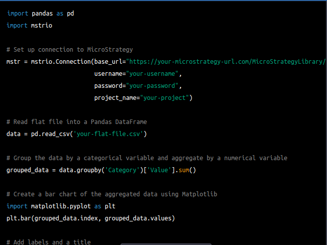
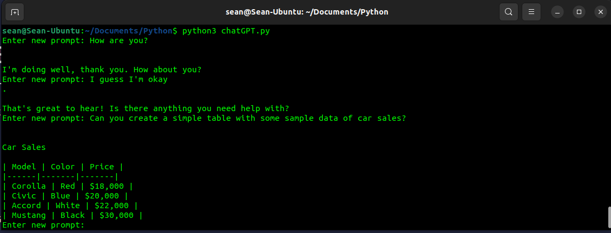
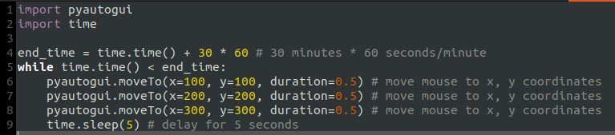
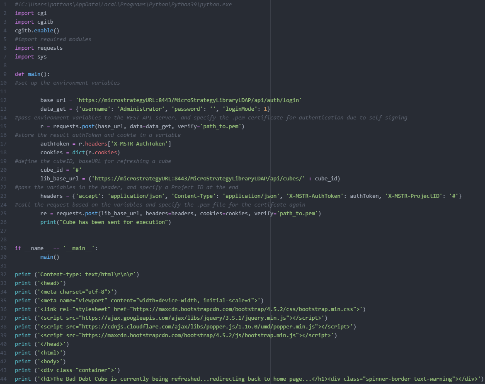
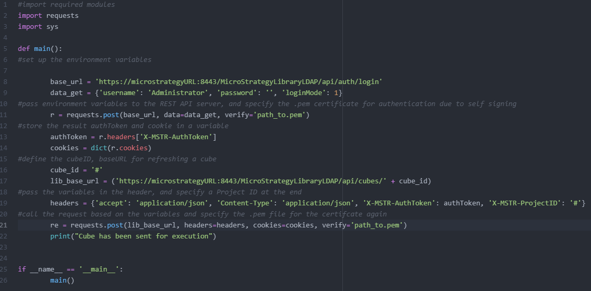
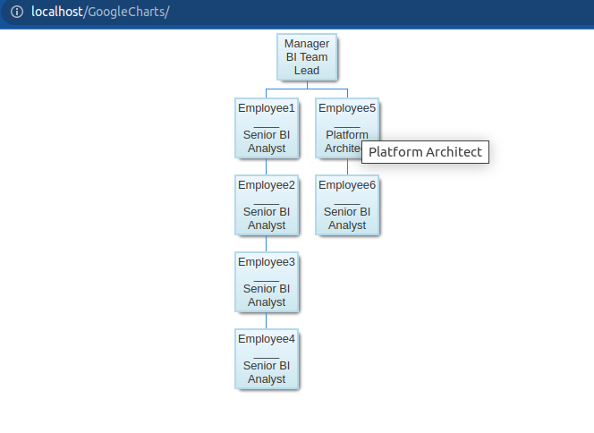
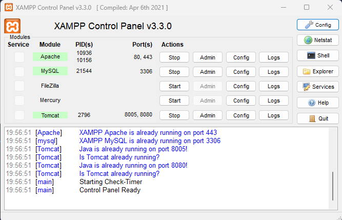
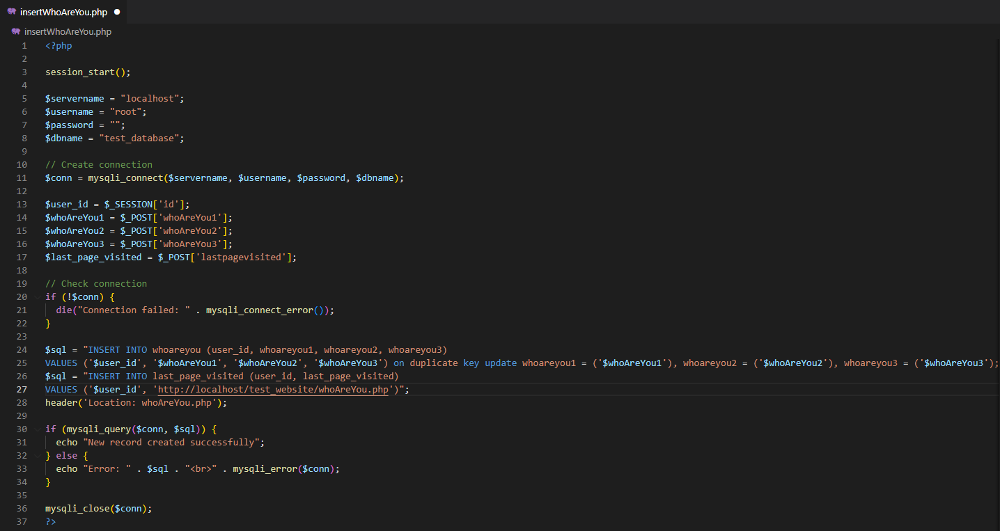

Blog
ChatGPT
- Data Visualisations using ChatGPT Within my team, we frequently rely on mstrio, the MicroStrategy module, to fulfill various tasks related to MicroStrategy. This comprehensive module offers a range of built-in functions that facilitate seamless interaction with MicroStrategy's REST API. Intrigued by the possibilities, I pondered the prospect of integrating ChatGPT with mstrio. While my endeavors in that particular area are still a work in progress, I managed to achieve an interesting outcome—I successfully created a visualization using Matplotlib. Although it may seem unrelated, this accomplishment continues to captivate my interest, opening doors to further exploration and potential synergies between ChatGPT and mstrio. 
- Command Line Prompt In December 2022, I became aware of ChatGPT and promptly signed up for an account. Engaging in numerous conversations proved to be an enjoyable experience until I encountered an unexpected inability to access the website. Determined to continue interacting with ChatGPT, I embarked on a quest to explore alternative methods of interfacing with it. My objective was to find a way to leverage Python commands or general text commands to carry out intelligent tasks, such as data manipulation and visualization. Although my initial goal remained unfulfilled, I stumbled upon a couple of forums that provided valuable insights. Armed with this newfound knowledge, I successfully pieced together a Python-powered interactive chat interface with ChatGPT, allowing me to continue harnessing its capabilities. 
Python
- pyautogui Automatically Move Mouse Cursor A client approached me with a request to develop a Python-based program capable of automatically opening a file in a specific program and executing predefined keystrokes. In response, I began researching and came across pyautogui, a library that caught my attention. During the process of exploring its capabilities, I discovered that I could swiftly assemble a Python script to automate the movement of my mouse cursor. Although it may sound trivial, this functionality has proven helpful to me during home workouts by preventing the screensaver from activating, enabling me to easily navigate through songs on Spotify. 
- Python cgi scripts One evening, an idea sparked in my mind: Could we leverage our current MicroStrategy installation to host a Python application instead of going through the hassle of setting up a separate Python web framework? In my quest for answers, I stumbled upon a website that hinted at the possibility of utilizing CGI scripts hosted in the Tomcat Webapps folder. This discovery motivated me to embark on a project where I successfully constructed a webpage using a CGI script that employs Python to establish a connection with the MicroStrategy API. The webpage includes a button that triggers the refreshing of cubes—a small but significant achievement within the MicroStrategy environment. 
- Python REST API Following a considerable investment of time with MicroStrategy while implementing a proof of concept (POC) utilizing their Hypercard feature, my curiosity piqued regarding the utilization of their built-in API functionality. This led me on a journey of numerous trials, errors, and countless late nights as I diligently sought to gain a solid comprehension of the API workflow. As a result, I came to appreciate the immense potential that REST APIs offer in terms of providing diverse means to interact with data. 
Google Charts During my tenure at my previous employer, a strategic decision was made to transition to Google Cloud Platform (GCP) and veer away from MicroStrategy. Naturally, I became curious about the range of business intelligence (BI) tools offered by Google and soon realized that there existed a significant void to be filled. Subsequently, I embarked on a research journey exploring Looker, an advanced BI platform, and delving into the capabilities of Google Charts.
- Org Structure I found the Org Structure visual representation to be exceptionally valuable, especially when an organization has effectively constructed its organizational structure in a database. In such cases, generating visualizations using Google Org Structure Charts becomes remarkably straightforward. It's a functionality that I truly wish could be seamlessly integrated with other visualisation Tools. 
HTML
- Xampp When I commenced my studies in web development nearly 12 years ago, comprehending the interconnection between web servers, PHP servers, and databases was quite challenging. In retrospect, I should have invested more time in finding a more comprehensive course. However, now that I am revisiting this field to leverage the advancements in technology offered by MicroStrategy, I am pleasantly surprised at how quickly I can set things in motion using Xampp. MicroStrategy's Web and Library functionalities can both be deployed on Tomcat. What's particularly intriguing is that the Library feature seamlessly integrates with their proprietary REST API. This presents an excellent opportunity to delve into these skills using a user-friendly application, thereby facilitating a deeper understanding of the subject matter. 
- PHP I found working on a Word document to be quite frustrating due to the excessive formatting options that had been applied. This made the document challenging to complete, as I spent most of my time removing unnecessary lines that were intended for printing. To address this issue, I decided to explore an alternative solution using HTML form tags for each question. By leveraging these tags, I could input my answers directly into a database associated with my profile. Once I completed all the questions, I would be able to generate a comprehensive analysis of my answers. Since it had been a considerable amount of time since I last delved into PHP, this presented an excellent opportunity for me to reacquaint myself with the language after a 12-year hiatus. Additionally, it allowed me to enhance my skills in relational database development. I thoroughly enjoyed learning PHP and found it to be a valuable experience. 